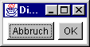

31.1 Erstellen eines Dialogs
In diesem Kapitel soll das Erzeugen von Fenstern mit eingebetteten
Dialogelementen vorgestellt werden. Derartige Fenster werden in der
Praxis sehr viel häufiger benötigt als Fenster, deren Ausgabe
mit primitiven Grafikoperationen erzeugt wurde, wie sie in den Kapiteln
24, 25
und 26 vorgestellt wurden.
Der Einfachheit halber wollen wir derartige Fenster in diesem Kapitel
als Dialoge bezeichnen. Sie dienen dazu, Programmdaten anzuzeigen,
und geben dem Anwender die Möglichkeit, diese zu ändern.
Das Erstellen eines Dialogs erfolgt in vier Schritten:
- Anlegen eines Fensters
- Zuordnen eines Layoutmanagers
- Einfügen von Dialogelementen
- Anzeigen des Fensters
31.1.1 Anlegen eines Dialogfensters
Das Anlegen eines Fensters zur Aufnahme von Dialogelementen erfolgt
genauso wie das Anlegen eines normalen Fensters. Üblicherweise
wird dazu eine eigene Fensterklasse abgeleitet, um die Steuerung des
Dialogs zu kapseln.
31.1.2 Zuordnen eines Layoutmanagers
Wie bereits erwähnt, sind die Layoutmanager in Java für
die Anordnung der Dialogelemente im Fenster verantwortlich. Jeder
Layoutmanager verfolgt dabei eine eigene Strategie, Elemente zu platzieren
und in der Größe so anzupassen, dass sie aus seiner Sicht
optimal präsentiert werden.
Die Zuordnung eines Layoutmanagers zu einem Fenster wird in der Klasse
Container
realisiert. Container
ist direkt aus Component
abgeleitet und beide zusammen bilden das Gerüst für alle
anderen Fensterklassen. Die Klasse Container
stellt eine Methode setLayout
zur Verfügung, mit der der gewünschte Layoutmanager dem
Fenster zugeordnet werden kann:
Java stellt standardmäßig die fünf Layoutmanager FlowLayout,
GridLayout,
BorderLayout,
CardLayout
und GridBagLayout
zur Verfügung. Der einfachste Layoutmanager ist FlowLayout,
er positioniert die Dialogelemente zeilenweise hintereinander. Passt
ein Element nicht mehr in die aktuelle Zeile, so wird es in der nächsten
platziert usw. Die genaue Funktionsweise der Layoutmanager wird später
in diesem Kapitel vorgestellt.
31.1.3 Einfügen von Dialogelementen
Das Einfügen von Dialogelementen in das Fenster erfolgt mit der
Methode add
der Klasse Container:
public Component add(Component comp)
public Component add(Component comp, int pos)
public void add(Component comp, Object constraints)
|
java.awt.Container |
Bei der ersten Variante wird lediglich die einzufügende Komponente
übergeben und vom Layoutmanager an der dafür vorgesehenen
Position untergebracht. Die zweite Variante erlaubt das Einfügen
der aktuellen Komponente an beliebiger Stelle in der Liste der Komponenten.
Die dritte Variante erwartet zusätzlich ein Constraints-Objekt,
das bei bestimmten Layoutmanagern weitere Informationen zur Positionierung
der Komponente angibt. Wird beispielsweise die Klasse BorderLayout
zur Anordnung der Dialogelemente verwendet, kann hier eine der Konstanten
SOUTH,
NORTH,
WEST,
EAST
oder CENTER
übergeben werden, um anzuzeigen, an welcher Stelle des Fensters
das Element platziert werden soll.
Sollen Komponenten, die bereits an das Fenster übergeben wurden,
wieder daraus entfernt werden, so kann dazu die Methode remove
verwendet werden. Als Parameter ist dabei das zu löschende Objekt
zu übergeben:
Container
stellt auch Methoden zur Verfügung, um auf die bereits eingefügten
Dialogelemente zuzugreifen:
public int getComponentCount()
public Component getComponent(int n)
public Component[] getComponents()
|
java.awt.Container |
Mit getComponentCount
kann die Anzahl aller eingefügten Komponenten ermittelt werden.
getComponent
liefert die Komponente mit dem angegebenen Index und getComponents
gibt ein Array mit allen eingefügten Komponenten zurück.
31.1.4 Anzeigen des Dialogfensters
Wurden alle Komponenten an den Container übergeben, kann der
Dialog formatiert und durch einen Aufruf von setVisible
angezeigt werden. Zweckmäßigerweise sollte vorher die Methode
pack
der Klasse Window
aufgerufen werden, um die Größe des Fensters an den zur
Darstellung der Dialogelemente erforderlichen Platz anzupassen:
Wir wollen uns ein einfaches Beispiel ansehen, das diese vier Schritte
demonstriert:
001 /* Listing3101.java */
002
003 import java.awt.*;
004 import java.awt.event.*;
005
006 public class Listing3101
007 extends Frame
008 {
009 public static void main(String[] args)
010 {
011 Listing3101 wnd = new Listing3101();
012 wnd.setVisible(true);
013 }
014
015 public Listing3101()
016 {
017 super("Dialogtest");
018 addWindowListener(new WindowClosingAdapter(true));
019 setLayout(new FlowLayout());
020 add(new Button("Abbruch"));
021 add(new Button("OK"));
022 pack();
023 }
024 }
|
Listing3101.java |
Listing 31.1: Ein Dialog mit zwei Buttons
Das Programm erzeugt ein kleines Fenster, das nur die beiden Buttons
enthält. Da wir für das Fenster keine Größe angegeben
haben, sondern diese durch Aufruf von pack
automatisch berechnen lassen, ist das Fenster gerade so groß,
dass beide Buttons darin Platz finden:

Abbildung 31.1: Ein Dialog mit zwei Buttons